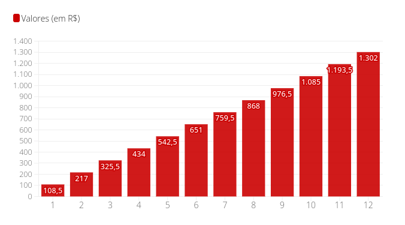

O reajuste do salário mínimo, que passará de R$ 1.212 para R$ 1.302 no primeiro dia do ano, também aumenta o valor de benefícios e serviços que usam o piso nacional como referência.
Veja abaixo onde o aumento de R$ 90 (ou 7,42%) no salário mínimo terá reflexos.
Abono salarial PIS/Pasep
O abono salarial PIS/Pasep é pago aos trabalhadores do setor público e privado que recebem, em média, até dois salários mínimos mensais com carteira assinada.Com o aumento do salário mínimo, o valor do abono salarial passa a variar de R$ 108,50 a R$ 1.302, de acordo com a quantidade de meses trabalhados. Só receberá o valor máximo quem trabalhou os 12 meses de 2021.
Valores do abono salarial PIS-Pasep 2023
Por meses trabalhados em 2022
Têm direito ao abono salarial cerca de 23 milhões de trabalhadores. O calendário de pagamentos de 2023, referente ao ano-base de 2021, ainda não foi divulgado, mas há indicações de que será entre os meses de fevereiro e julho do ano que vem.
Antes, a liberação dos recursos começava no segundo semestre e se estendia até o primeiro semestre do ano seguinte, mas a partir de 2022 passou a ser no início do ano – ao longo de 2021, no entanto, os pagamentos não ocorreram.